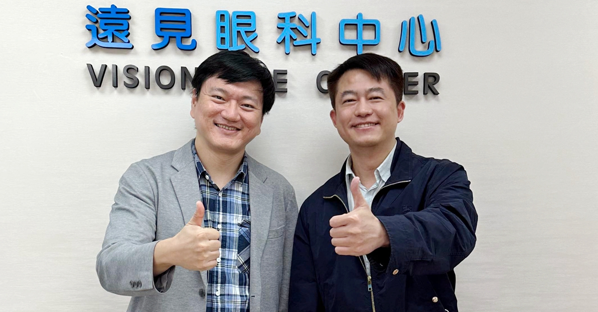
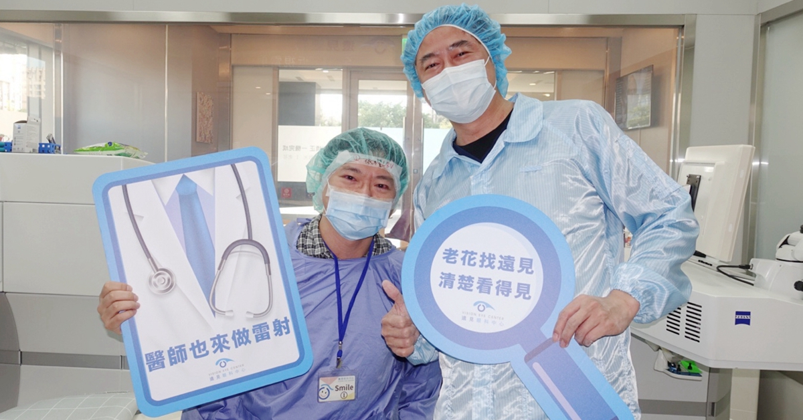
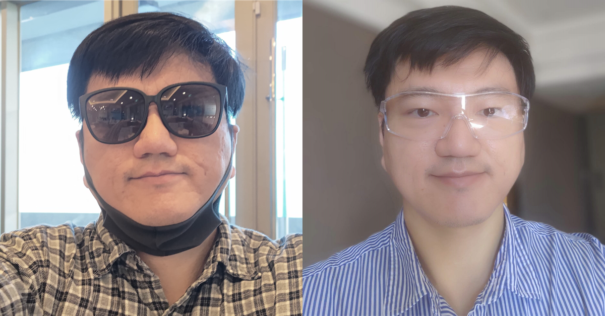

許多朋友知道，我之前評估老花雷射好一陣子，可能因為我在同儕間就是給人做事嚴謹且重視細節的印象，許多正在猶豫的同學朋友說，「你在評估喔？太好了，我們等你分享。」因為他們知道，我一定會讀過各種文獻、用各種方式評估，會是高品質的決策。
由於肩負眾人的期待，所以整理成這篇，給想看我評估過程的朋友一些參考。時間序如下：
8 月開始認真評估並大量閱讀
9 月到遠見眼科做可行性評估，並詢問剩下的問題。
10/5 下午做 Presbyond LBV 手術（方案包括一晚飯店住宿）
10/6 隔天回診視力恢復到 0.9
10/12 一周回診視力完全恢復正常
10/19 已經逐漸習慣沒有眼鏡的生活
問：為什麼會去做老花雷射 LBV？
漸進多焦點鏡片，左下右下的盲區問題，我還是不太能習慣。
老花的各種配鏡選擇，以及漸進多焦點的特性。
老花以後，我開始戴漸進多焦點鏡片，專業眼鏡行配得不錯，我也適應得不錯。不過戴了兩年，我還是對於視野左下角與右下角有盲區這件事情，感到挫折。
漸進多焦點的眼鏡鏡片是很了不起的發明，光學原理很聰明，我是請專業老師配的，使用蔡司很好的鏡片。但左下右下的模糊區，是光學設計上的必然，只能縮小，無法消失。
即使在中央 T 字形的可視範圍，清楚的視覺也不是隨叫隨到，需要用脖子去低頭或抬頭，以找到最清晰的視覺區，這個技能我花了兩年還是沒有精通。
於是我開始評估其他的解決方案。
問：你去哪裡做雷射手術？
我去新竹遠見眼科的張聰麒醫師這邊做的。
雖然我住台中，但我覺得這種手術，手術加門診總共也就四次，但可以用一輩子，距離不是我主要的考慮因素。
問：為什麼選擇遠見眼科張聰麒醫師？
我們做醫療人員的，如果家人或自己要做手術，是不是都會在院內打聽，什麼手術就是要找誰。因為我們懂原理、我們知道流程、我們真正在裡面工作、知道最重要的核心是什麼。
如果去打聽 Smile 跟 LBV 雷射手術，很多醫師自己的眼睛都是特別去找張醫師做的。
我個人很早就認識張醫師了，從他還在醫院受雇，專開疑難雜症手術時，就是新思惟課程的校友，他也跟我聊過他的生涯困境，當時的一些對話，促成了後續的轉變。所以我很清楚知道，他是個真心喜歡精進手術能力的眼科醫師，手藝也很好。
下面這段文字，出自我們 2018 年舉辦的活動，聰麒醫師演講主題的介紹頁面。
喜歡且專精在醫院開複雜手術，為何成立自己的據點與團隊？（張聰麒）
聰麒醫師是新思惟的早期校友，在 Facebook 上，從他偶爾加入的討論中感覺到，他對自己的生涯有很高的期許，一直在觀察醫療系統中的成功角色（包括：護理師、行政、醫師、集團等），並持續學習。
由於學習與訓練過程，並非一路順遂，所以成為主治醫師後，更加珍惜機會精進技術，在短時間內就以複雜手術知名，成為自己的招牌。在一次《網路時光屋》的課程中，聰麒趁互動實作時間私下問我：「我手術技術不錯，也很願意做，但為什麼好像沒辦法用這個去談出更好的條件。」
這是個好問題。於是我放下手邊的滑鼠，認真的分析給他聽：在人類世界裡，決定「價格」的，不是「技術難度」，而是「議價能力」，議價能力的核心，是不可取代性。
如果品牌在別人手上，你只是代工，即使你是最強代工廠，手術滿意度 95%，但品牌商還是可以去另一位手術滿意度 90% 的來代工，反正 5% 的差異，終端客戶不見得會注意到，注意到了也不見得知道是因為沒找你的關係。品牌商手上有你這張 A，還有競爭對手 K，放掉你，他沒差。但你不一樣，你少了這個代工單，自己的收入就是少一塊，沒有其他替代，自然你就根本沒有議價籌碼。
所以怎麼辦？如果你有自己的自有品牌，別人不找你代工，你的產能也不會浪費，甚至還能回過頭來帶給主流品牌商壓力，「你不找我沒關係，之後市面上就會看到有 95% 品質的產品跟你的 90% 競爭」，這時對方的壓力就大，給你的分潤自然就高。
聰麒知道了後，就開始一連串的學習跟改變，並走到現在這裡。正因為自己喜歡並專精複雜手術，為了保護這些頂尖技術能持續精進，不純粹消耗自己的體力與熱情，我們更應該讓這些技能取得他們應得的尊重與待遇！
問：畢竟是眼睛動手術，你不會擔心嗎？
一開始也會，我是靠著搜尋並閱讀醫學文獻，了解其原理後，就不害怕了。
動手術的地方，只是眼睛很前方的角膜而已。而張聰麒醫師以前開的刀，都是動到更裡面的結構，外面這邊對他來說並不難。
我為了這個主題查過 PubMed，如果你只想讀一篇的話，我蠻建議可以看這篇 review，裡頭說明了各種老花雷射做法的進步與總結，而聰麒醫師做的就是裡頭的 Presbyond LBV，這種手術比較新，修正了許多之前的問題，也比較適合近視患者的老花。
PresbyLASIK: A review of PresbyMAX, Supracor, and laser blended vision: Principles, planning, and outcomes / Indian J Ophthalmology
在這個閱讀過程，我理解到，視覺分成光學跟神經認知兩個部分。現今醫學對於眼睛的光學成像，了解得相當透徹！而雷射手術處理的就是光學的部分。
也是讀了這篇後才知道，這種基於 LASIK 的角膜屈光手術，就算運氣非常不好，矯正狀況不如預期，三個月視力穩定後，是可以再手術的。或者也可以選擇在極端狀況，如近距離閱讀或夜間開車，補上眼鏡輔助。
不過，當然會希望第一次就能順利做好，所以我還是會找自己信任的醫師。
問：還有哪些資料可以讀，中文的可以推薦一下嗎？
如果你是原理控，想知道這些新雷射手術的原理，蠻建議可以閱讀以下資料。
照護線上對於眼睛雷射手術的整理
遠見眼科官網
遠見眼科 YouTube 頻道
我覺得 YouTube 頻道上，幾位醫師術後的分享很打動我，尤其他們都提到，其實術後隔天就恢復九成左右。
問：我看可以考慮的手術有 Smile 跟 LBV 兩種，Smile 微創傷口小，LBV 是基於 LASIK 技術的，為什麼你選擇 LBV？
因為我已經老花了，而且可能因為工作都是看螢幕，我的老花速度算是偏快的，LBV 因為掀開角膜瓣，雷射能打的形狀比較特別，可以製造較深的景深，雙眼重疊立體感好、近區跟遠區也都有不錯的效果。
我因為也準備了一周要休養，所以就選最終視覺效果跟滿意度比較好的 Presbyond LBV。
這是一周回診時的合照。

問：Presbyond LBV 手術問世好一陣子了，但為什麼臺灣之前沒有流行起來？好像張聰麒醫師這邊做最多？
這也是我的問題，我評估當天有問。
張醫師提到，這個手術需要比較複雜的術前評估、期待溝通、機器設定、角膜瓣處理、術後照護、視力恢復預期的講解，他自己對於這種需要搞定各種細節與原理的事情比較喜歡用心，於是把整個服務跟流程架構起來。
這部分跟我自己做先天性心臟病的多切面電腦斷層經驗是一樣的，雖然說科技很進步，但實際應用有很多流程要優化，而且要懂物理原理才能做好設定，得到世界級的成果。比我早接觸多切面電腦斷層的醫院很多，但我們仍是世界第一個成功應用在新生兒的團隊，也開創了全新的服務跟研究領域。
I-Chen Tsai's academic publications
問：所以如果你今天年輕一些，沒有老花，你會選擇做 Smile 嗎？
會！
術後兩周了，我覺得每天起床不用先找眼鏡、戴口罩不用擔心眼鏡起霧、每天不用洗兩副眼鏡（生活+讀書）兩三次、可以買各種太陽眼鏡，其實是蠻開心的事。
最重要的，我原本想要的，眼睛看到哪裡，近的遠的，哪裡都清楚，不管是書、電腦、書架、超市、路況、高速公路路牌，這個有達到我的目標。而且可能因為視野大、又清楚，看書的速度比以前更快一些。
我自己做完兩周的心得，跟很多人一樣，都是「後悔太晚做」。
問：Smile 是微創手術，恢復真的比 LBV 快嗎？
其實兩個都很快，如果乖乖照建議點眼藥跟休息，都是一天就恢復到九成，一般之後的恢復，保守是說三個月。
我自己的話，可能因為聰麒院長手藝好，我也是那種很乖都會照醫囑照顧的患者，術後剛開始比較要注意的夜間開車，我兩周後已經很有信心，接送小孩補習沒問題。
手術方式的選擇，我覺得還是經過完整眼睛評估後，跟醫師討論會比較好。
這是我剛開完雷射手術的瞬間。

下圖左是術後當天下午的樣子，下圖右是隔天在飯店起床後，準備要回診前。太陽眼鏡跟護目鏡也都是遠見眼科送的，那支太陽眼鏡外型很不錯，術後戴個幾天也都蠻大方的，而且我後來去買太陽眼鏡時，發現要比這副好看並不容易，要挑一陣子才有。整個手術流程，可以體驗到很多這種細膩。

問：你會推薦自己的家人去做嗎？
當然，我太太看我恢復蠻順利，也預計在我的追蹤期結束後，去找張聰麒醫師評估做 Smile。
問：術後沒戴眼鏡，跟別人印象中的蔡依橙不太一樣，你會考慮戴平光眼鏡嗎？
我知道有知名 YouTuber 是為了符合別人的視覺印象，重新把平光眼鏡戴回去。我一開始也有這樣想過，但最終決定不要。
因為當我術後恢復，眼睛擁有全視野的視力後，我把原本的眼鏡鏡片拆除，戴上鏡框，瞬間的感想是：「原來過去 30 多年，我都只能看到這麼小的範圍啊！」
下圖左是我以前的照片，你可以發現我已經挑選特別大的鏡框，有很大的視野了。但如果生活能夠毫無拘束，我不會為了別人希望看到怎樣的我，就去改變自己。畢竟這才是本來的我啊！
問：問一個比較進階的問題，為什麼不用 Smile 技術，去打 LBV 的球面像差視差呢？而要用 LASIK 技術？
這也是我曾經問過的問題，但因為 Smile 跟 Presbyond LBV 都是蔡司的技術，他們的機器並沒有把這兩者整合在一起。我猜想，目前使用 Smile 技術削切出來的角膜透鏡，沒辦法做出 LBV 需要的特殊形狀跟精準度。
也許未來會有，但目前就是沒有，而這種手術都是早做早享受的，我覺得現在就做，用 LASIK 技術做 LBV，我已經很能接受了。
問：進階原理問題，到底 Presbyond LBV 所謂的「用球面像差延長景深」，是怎麼一回事？
這個問題我也問過，也找了很多資料，但這部分的理論蔡司並沒有公開太多。網路上你可以找到很多術前規劃的角膜曲度圖，但為什麼這樣修角膜，視覺認知就能擁有景深，這應該是他們家的理論跟實務專利。
我們做為消費者跟醫師，進一步可以依賴的資訊，就是大規模使用後的滿意度，而這部分確實是好的。前面提到的 review 文章，也有 Presbyond LBV 術後視力狀況總結，的確很不錯。
PresbyLASIK: A review of PresbyMAX, Supracor, and laser blended vision: Principles, planning, and outcomes / Indian J Ophthalmology
問：所以你給還在猶豫的人，什麼建議？
每個人的狀況都不一樣，想解決的問題可能也不同。如果以上的資訊你看了覺得有考慮，我覺得可以先去作完整評估，看看角膜厚度是否足夠，以及溝通可能的手術跟術後視力的預期。
技術的部分我覺得不用擔心，我把自己的眼睛交給張聰麒醫師，很放心。
相關連結
遠見眼科官網
遠見眼科 YouTube 頻道
照護線上對於眼睛雷射手術的整理
PresbyLASIK: A review of PresbyMAX, Supracor, and laser blended vision: Principles, planning, and outcomes / Indian J Ophthalmology